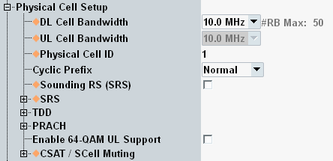

Physical Cell Setup
This section defines physical layer attributes of the simulated cell.
For background information, see also "Physical DL Channels and Signals".

Cell parameters
Contents
This section defines physical layer attributes of the simulated cell.
For background information, see also "Physical DL Channels and Signals".
